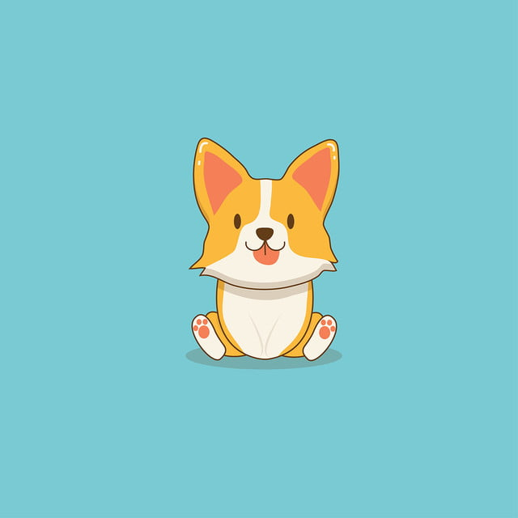
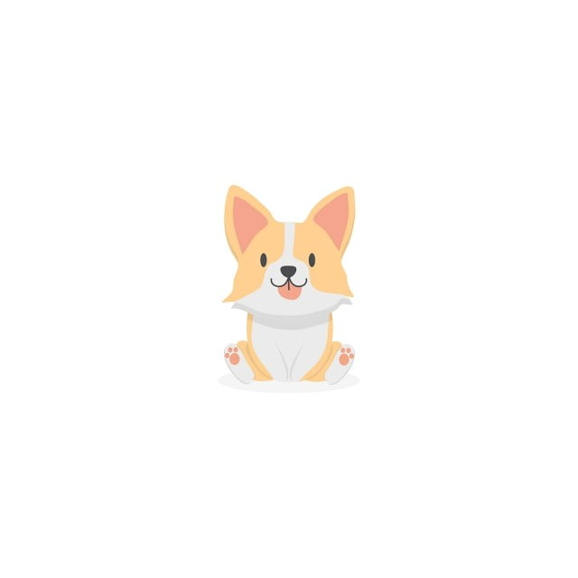

Chó cũng là loài động vật đầu tiên được con người thuần hóa và đã được chọn giống qua hàng thiên niên kỷ với nhiều hành vi, khả năng cảm nhận và đặc tính vật lý. Loài vật này được sử dụng để giữ nhà hoặc làm thú chơi. Răng của chúng dùng để giết mồi, nhai thịt và gặm thịt, thỉnh thoảng để cắn nhau

